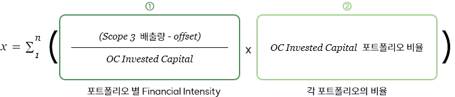

향후 범국가적인 배출량 관리 수준에 상응하게 기업 수준에서 배출량을 제한하는 규제의 강화가 예상됨에 따라 기업의 Scope 3 배출 관리에 대한 이해관계자들의 관심이 제고되고 있습니다. 과학기반감축목표 이니셔티브(Science Based Targets initiative, SBTi+) 등 국제 기후 변화 이니셔티브가 기업의 Scope 3에 대한 장기적 Net Zero 달성을 요구하기 시작하였으며, 국내외 석유화학 기업들은 친환경 사업 확대 전략과 연계하여 2050년 Scope 3 Net Zero 달성을 전략적으로 선언하고 있습니다.
장기적 Scope 3 Net Zero 달성을 위해서는 SK이노베이션 뿐만이 아닌 주요 자회사를 포함한 SK이노베이션 계열 통합 차원의 구체적 Scope 3 감축계획 수립이 필요합니다. 이에 2022년 SK이노베이션은 계열 통합 Scope 3 감축 계획을 수립하였고 탄소 감축을 위한 노력을 지속적으로 전개하고자 합니다.
SK이노베이션은 Portfolio Designer로서의 SK이노베이션 계열의 Portfolio Transformation을 이끌고 있으며, 이러한 성과를 Financial Intensity로 관리하고자 합니다. Financial Intensity는 SK이노베이션이 보유한 각 ⓛ Portfolio의 단위당 온실가스 감축 노력과 ② SK이노베이션의 포트폴리오 Transformation 성과를 반영합니다.
 * Invested Capital은 각 사업을 위해 보유한 영업자산을 의미하며, 영업활동에 따른 단위당 배출량 산정에 적절한 지표로 판단하고 있습니다.